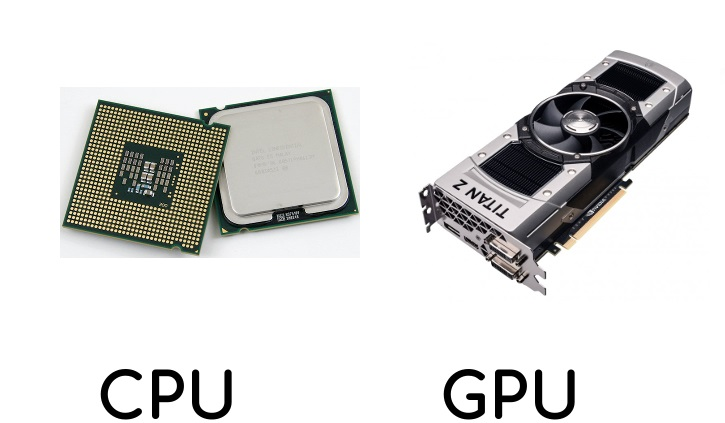

Without processing, a computer really isn't a computer as there main function is to process and compute data. In order to be able to process Data, computers have a CPU or a Central Processing Unit. One can think of the CPU as the brain of the computer as everything is processed by it. The CPU performs basic logical, arithmetic and input/output operations that control programs at up to a billion operations per second. In some cases, a CPU may also compute graphical data so that it can be displayed to the monitor or choice of display.
The Graphics Processing Unit is the module found in a computer that takes the appropriate data and outputs it to a monitor. Most modern day systems may not have a GPU as most CPUs have the ability to output an image to a monitor throug the monitor, however, if the user of the computer wants more graphical processing power (ie. Render better graphics) then they may use a GPU.
